Index
Ego Vehicle Component
In this tutorial we will create a new EgoVehicle.
To learn more about what an EgoVehicle is in AWSIM please visit Ego Vehicle description page.
Cerate an Object
Add a child Object to the Simulation called EgoVehicle.
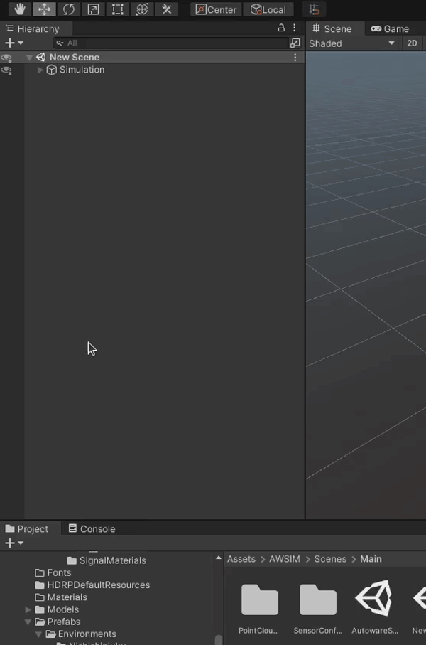
Add a Rigidbody
-
While having a newly created
EgoVehicleObject selected, in the Inspector view click on the 'Add Component' button, search forRigidbodyand select it.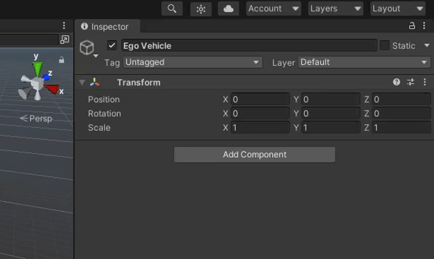
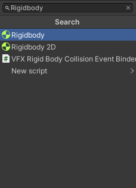
-
Configure Mass and Drag with the correct values for your Vehicle.
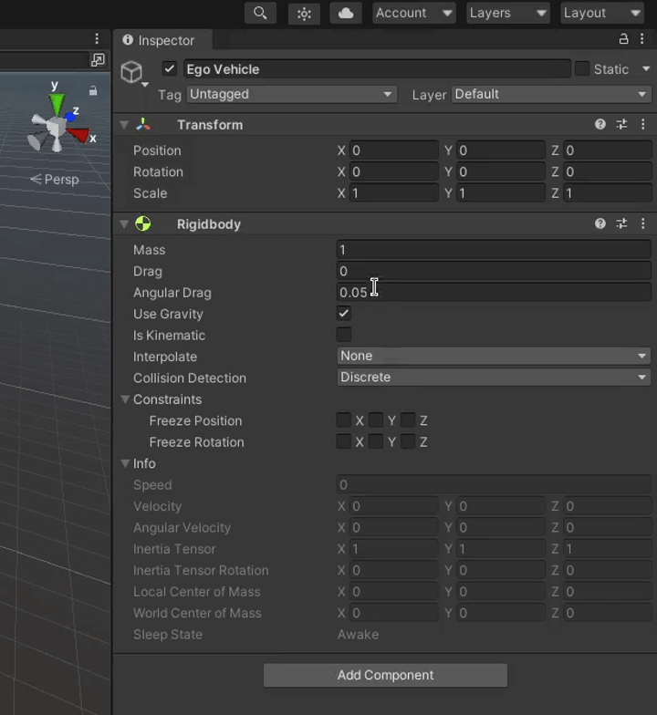
-
Configure Interpolation and Collision Detection.
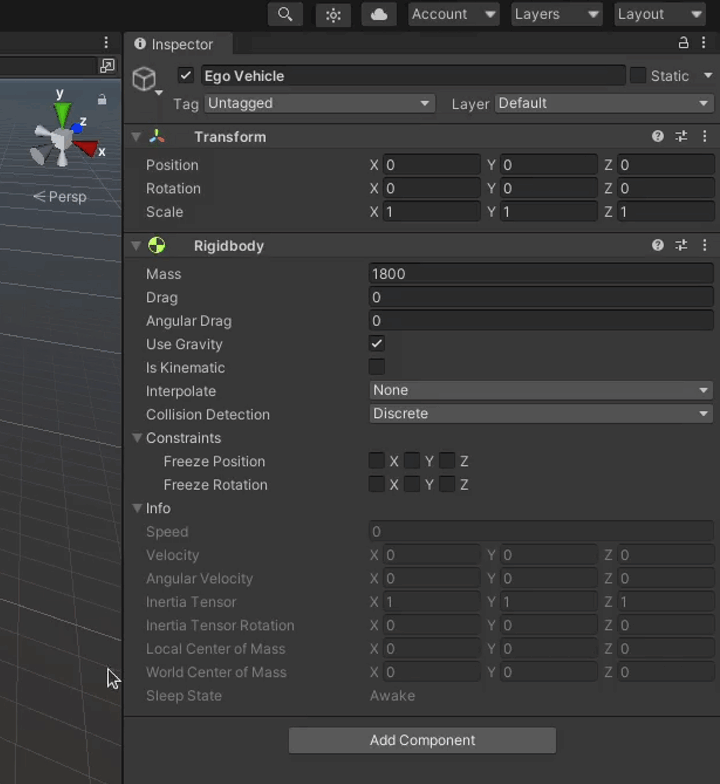
Add visual elements
For a detailed explanation hwo to add visual elements of your Vehicle check out this dedicated tutorial.
Add a Canter of Mass
To add a center of mass to your vehicle you have to add a CoM child Object to the EgoVehicle Object (the same as in steps before).
Then just set the position of the CoM Object in the Inspector view to represent real-world center of mass of the Vehicle.
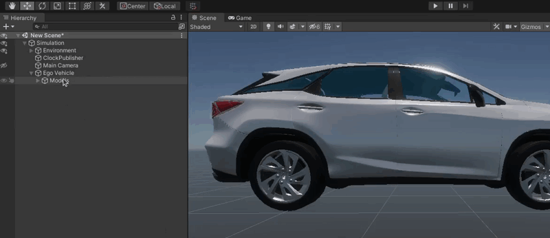
How do I know what is the Center of Mass of my Vehicle
The best way is to obtain a Center of Mass information from your Vehicle documentation.
However, if this is not possible, you can try to estimate the Center of Mass of your vehicle. Best practice is to set the estimated Center of Mass as the following
- Evenly between the axles of the Vehicle
- Right in the middle of the Vehicles width
- Somewhere in the neighborhood of a quarter of the Vehicle height
Note: This will vary very much depending on your Vehicle construction. For the best possible result please follow the Vehicle specifications.
Add a Reflection Probe
-
Add a new Object called
Reflection Probeas a child to theEgoVehicleObject.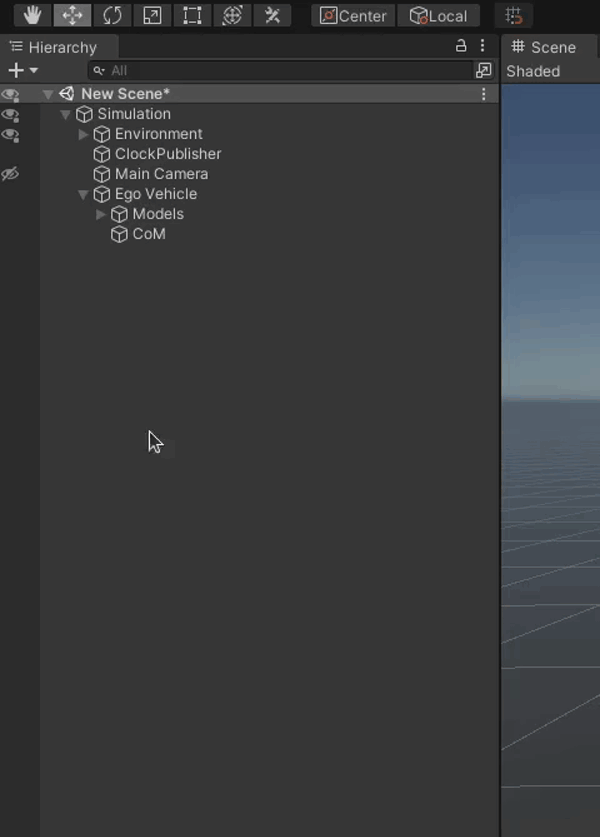
-
Click on the 'Add Component' button, in the windows that pops-up search for
Reflection Probeand select it.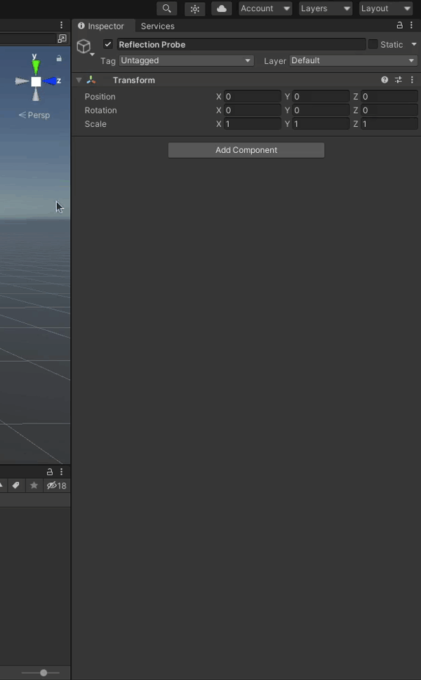
Note
Please note that with
Reflection Probethere should also be automatically added a`HD Additional Reflection DataScript.
-
Configure the
Reflection Probeas you wish.Example Configuration
Below you can see an example configuration of the
Reflection Probe.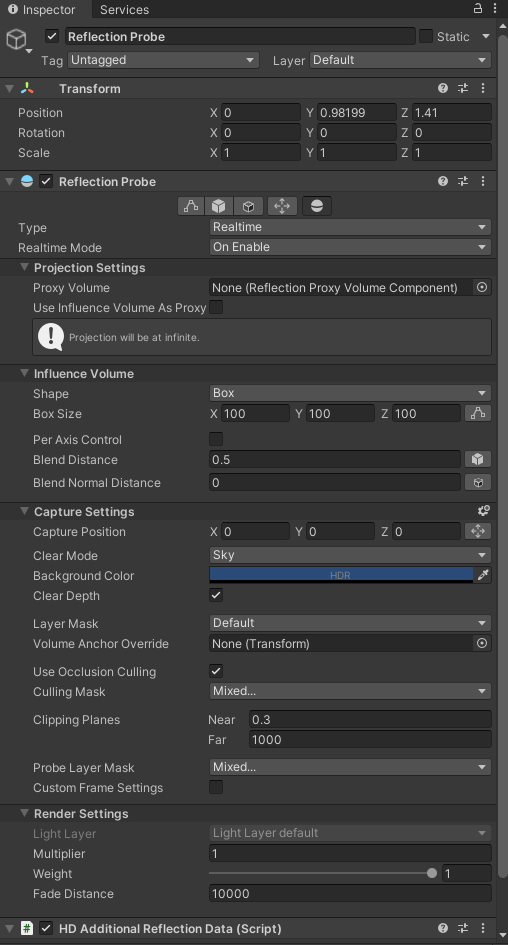
Add Colliders
For a detailed explanation how to add colliders to your Vehicle check out this dedicated tutorial.
Add a base for sensors (URDF)
You will most certainly want to add some sensors to your EgoVehicle.
First you need to create a parent Object for all those sensors called URDF.
To do this we will add a child Object URDF to the EgoVehicle Object.
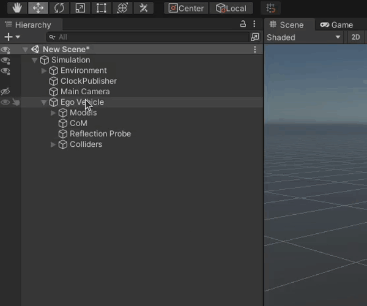
This Object will be used as a base for all sensors we will add later.
Add a Vehicle Script
To be able to control your EgoVehicle you need a Vehicle Script.
-
Add the
VehicleScript to theEgoVehicleObject.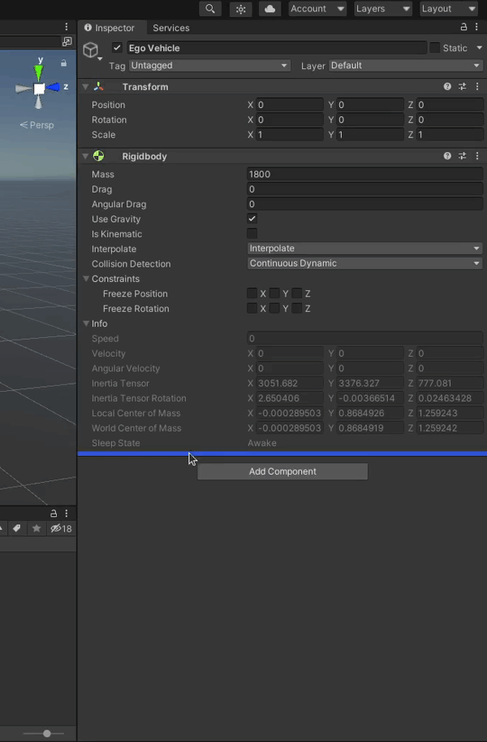
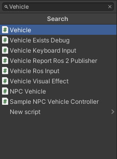
-
Configure the
VehicleScript Axle Settings and Center Of Mass Transform.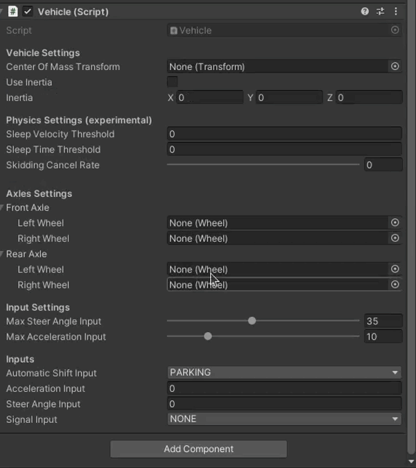
Testing
It is not possible to test this Script alone, but you can test the following
If components listed above work correctly this means the Vehicle Script works correctly too.
Add a Vehicle Keyboard Input Script
You can control your EgoVehicle in the simulation manually with just one Script called Vehicle Keyboard Input.
If you want to add it just click the 'Add Component' button on the EgoVehicle Object and search for Vehicle Keyboard Input Script and select it.
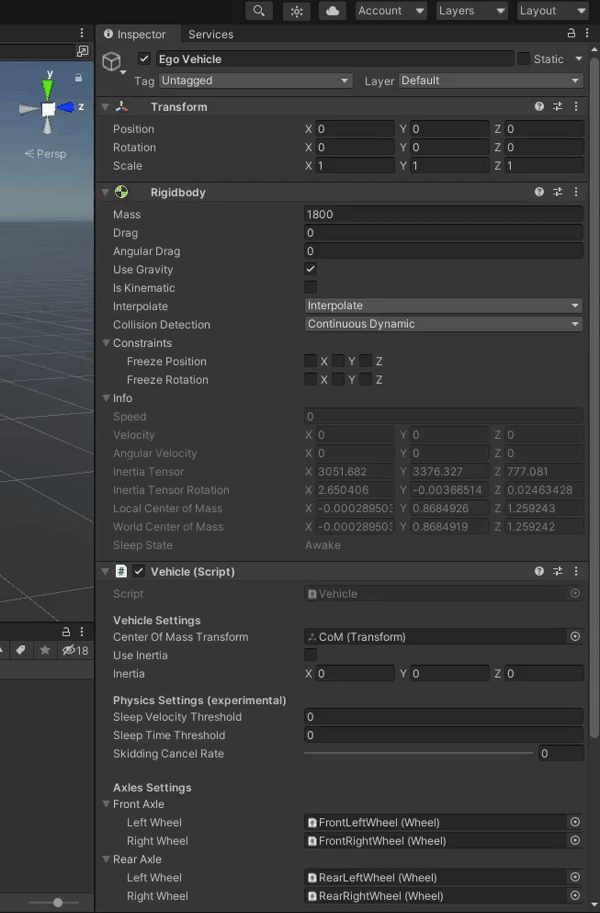
Add a Vehicle Visual Effect Script
For a visual indication of a Vehicle status you will need a Vehicle Visual Effect Script.
To add and configure it follow the steps below.
-
Add a
Vehicle Visual EffectScript by clicking 'Add Component' button, searching for it and selecting it.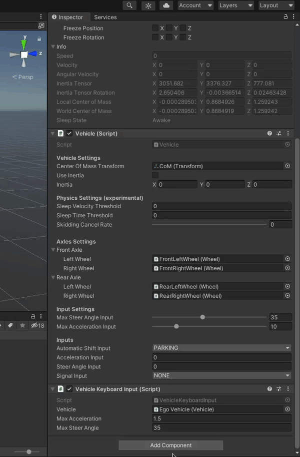
-
Configure the lights.
Note
In this step we will configure only
Brake Lights, but should repeat this for every Light. The process is almost the same for all Lights - just change the mesh renderer and lighting settings according to your preference.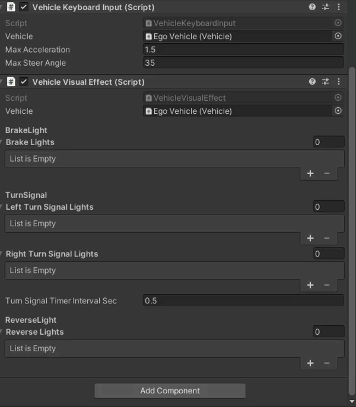
How to test
After configuring Vehicle Visual Effect Script it is advised to test whether everything works as expected.
-
Make sure you have a
Vehicle Keyboard InputScript added and that it is enabled. -
If your scene does not have any models yet please turn the gravity off in
Rigidbodyconfiguration so that the Vehicle does not fall down into infinity.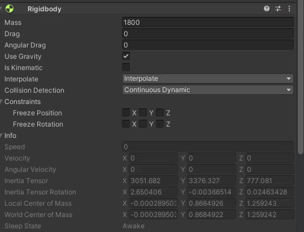
-
Start the simulation.

-
Test the Turn Signals.
You can control the Turn Signals with a
Vehicle Keyboard InputScript. Activate the Turn Signals with one of the following keys1- Left Turn Signal2- Right Turn Signal3- Hazard Lights4- Turn Off all Signals
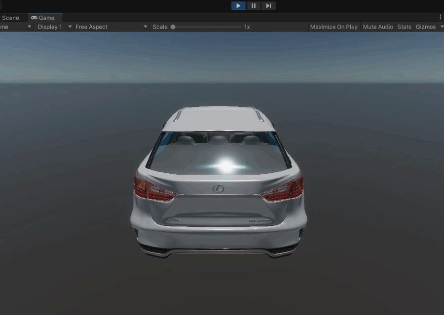
-
Test the Lights.
You can control the lights by "driving" the Vehicle using
Vehicle Keyboard InputScript. Although if you have an empty Environment like in this tutorial the Vehicle won't actually drive.To test Brake Lights change the gear to Drive by pressing
Don the keyboard and activate braking by holdingarrow down.To test the Reverse Light change the gear to Reverse by pressing
Ron the keyboard. The Reverse Light should turn on right away.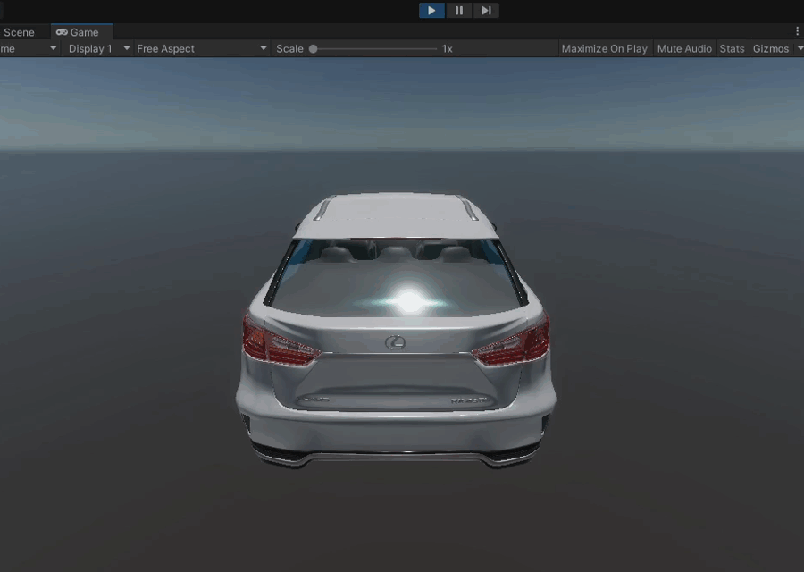
Camera tip
If you have not configured a camera or configured it in such a way that you can't see the Vehicle well you can still test most of the lights by changing views.
- Turn the Light (or Signal) on by pressing the appropriate key
- Move to the Scene View by pressing
ctrl + 1- now you can move the camera freely - To change the Lights you need to go back to Game View by pressing
ctrl + 2
Pleas note that this method won't work for testing Brake Lights, as for them to work you need to keep the arrow down button pressed all the time.
Add a Vehicle Ros Input Script
For controlling your Vehicle with autonomous driving software (e.g. Autoware) you need a Vehicle Ros Input Script.
Disable Vehicle Keyboard Input Script
If you have added a Vehicle Keyboard Input Script in your Vehicle please disable it when using the Vehicle Ros Input Script.
Not doing so will lead to the vehicle receiving two different inputs which will cause many problems.
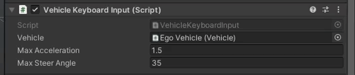
Add it to the EgoVehicle Object by clicking on the 'Add Component' button, searching for it and selecting it.
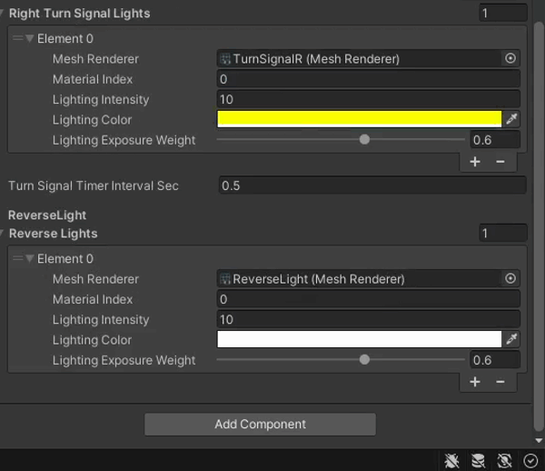
The Script is configured to work with Autoware by default, but you can change the topics and Quality of Service settings as you wish.
Note
The Vehicle should be configured correctly, but if you have many Vehicles or something goes wrong, please select the right Vehicle in the Vehicle field by clicking on the small arrow icon and choosing the right item from the list.
How to test
The best way to test the Vehicle Ros Input Script is to run Autoware.
- Run the Scenethe same as on this page.
- Launch only the Autoware like on this page
- Plan a path in Autoware like here, if the Vehicle moves in AWSIM correctly then the Script is configured well.
Add Sensors
For a detailed explanation how to add sensors to your Vehicle check out this dedicated tutorial.
Add a Vehicle to Scene
Save as prefab
First you will have to save the Vehicle you created as a prefab, to easily add it later to different Scenes.
- Open the Vehicles directory in the Project view (
Assets/AWSIM/Prefabs/Vehicles) - Drag the Vehicle Object from the Hierarchy view to the Vehicles directory
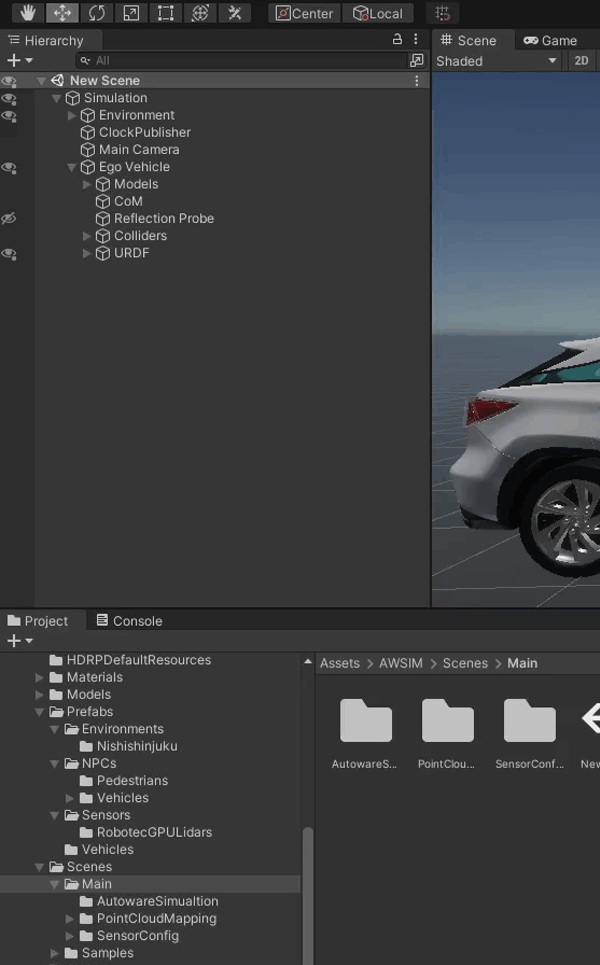
Add to Scene
To add a Vehcile to the Scene please see this tutorial.